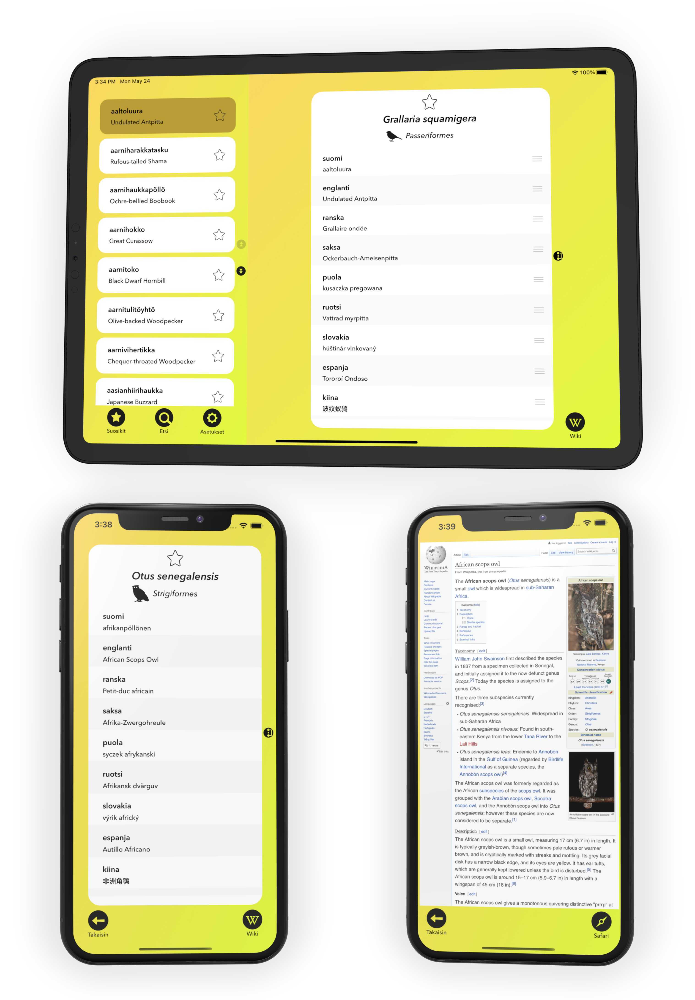

Pave Väisänen
Biologi | Sovelluskehittäjä
Pave Väisänen
Biologi | Sovelluskehittäjä
Tulossa kesäkuu 2021
Pyöräasemat-sovelluksen avulla on helppo nähdä pääkaupunkiseudun kaupunkipyöräasemien reaaliaikainen tilanne. Sen avulla pystyy myös helposti löytämään reitin minkä tahansa aseman luokse. Sovellus tarjoaa Helsinki/Espoo-alueen sekä Vantaan kaupunkipyöräjärjestelmien tiedot helppokäyttöisessä muodossa ja on luokassaan ensimmäinen sovellus joka visuaalisesti erottelee edellämainitut kaksi eri pyöräjärjestelmää toisistaan.
Pyöräasemat on lisäksi ensimmäinen mobiilisovellus, joka tarjoaa kunnollisen käyttökokemuksen Apple-Watch älykelloa varten. Kellon avulla omien suosikkiasemien pyörätilanne on aina yhden nopean ranneliikkeen päässä.
Sovellus hyödyntää Digitransitin avointa rajapintaa.
Julkaistu helmikuussa 2021
Luontotilastot on ilmainen sovellus, jonka avulla käyttäjät voivat etsiä tietoa ja tilastoja mistä tahansa suomalaisesta eliölajista. Sen avulla pystyy myös tarkastelemaan yksittäisiä historiallisia lajihavaintoja. Sovellus hakee tietonsa Suomen lajitietokeskuksen avoimen rajapinnan kautta ja oli julkaisuhetkellään ensimmäinen kyseistä rajapintaa hyödyntävä kolmannen osapuolen sovellus.
Lajitietokeskus on tehnyt haastattelun ja julkaisutiedotteen sovellukseen liittyen:
Julkaistu syyskuussa 2018
Lintunimistö-sovellus auttaa löytämään nopeasti minkä tahansa lintulajin nimen yli 20 eri kielellä. Sovelluksen tarkoituksena on helpottaa lintuaiheisen kirjallisuuden ymmärtämistä. Lisäksi jokaisen lintulajin yhteydestä löytyy pikalinkki Wikipediaan lajin lisätietojen saamiseksi. Tämän ansiosta sovellusta voi käyttää myös näppäränä hakuteoksena maailman lintulajeista.
Kehitetty 2019 - 2020
Olen rakentanut Aqsens Health -yrityksessä useita sovelluksia, joiden avulla voi kontrolloida ja tehdä mittauksia yrityksen rakentamista mittalaitteista. Viimeisimmän sovelluksen avulla pystyi mittaamaan fluorisenssia mittalaitteen sisälle asetettavasta nestekasetista. Sovellus kommunikoi mittalaitteen kanssa bluetoothin välityksellä. Sovellusta ei ole julkaistu avoimesti vaan on tarkoitettu yrityksen sisäiseksi työkaluksi.
Aqsens Health kotisivut